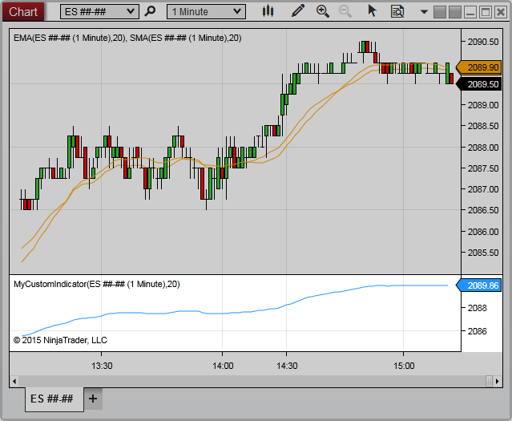

|
<< Click to Display Table of Contents >> ChartPanel |


|
ChartPanel
|
<< Click to Display Table of Contents >> ChartPanel |
|
The ChartPanel class includes a range of properties related to the panel on which the calling script resides. Each Panel has 3 independent ChartScales: Left, Right, and Overlay.

ChartObjects |
A collection of objects configured on the chart panel |
H |
Indicates the height (in pixels) of the chart panel |
IsFocused |
Indicates the chart panel is currently in focus in the window |
IsWaitingForBars |
Indicates one or more objects in the chart panel are waiting for Bars objects to load or refresh |
IsYAxisDisplayedLeft |
Indicates the y-axis is visible on the left side of the chart panel |
IsYAxisDisplayedOverlay |
Indicates any objects configured in the panel are using the Overlay scale justification |
IsYAxisDisplayedRight |
Indicates the y-axis is visible on the right side of the chart panel |
MaxValue |
Indicates the maximum Y value of objects within the chart panel |
MinValue |
Indicates the minimum Y value of objects within the chart panel |
PanelIndex |
Indicates the index of the chart panel in the collection of configured panels |
Scales |
A collection of ChartScale objects corresponding to objects within the chart panel |
W |
Indicates the width (in pixels) of the chart panel |
X |
Indicates the x-coordinate on the chart canvas at which the chart panel begins |
Y |
Indicates the y-coordinate on the chart canvas at which the chart panel begins |